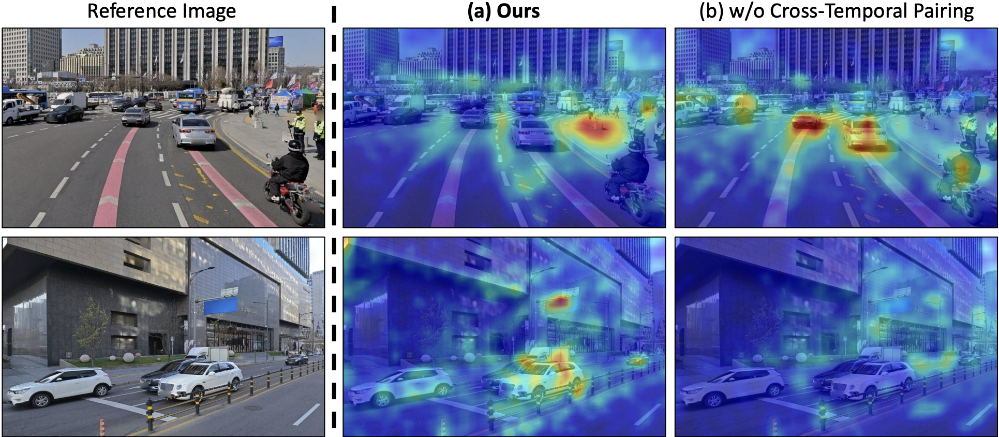

Data Overview
SWM is trained on aligned pairs of street-view references and target video sequences from two sources: 1.2M real panoramic images captured across Seoul, and 10K synthetic videos from a Unreal Engine-based CARLA urban simulator spanning 431,500m² of city area.

Cross-Temporal Pairing & Street-View Interpolation
Cross-temporal pairing requires that reference street-view images be captured at a different time from the target, forcing the model to rely on persistent spatial structure and ignore transient objects like vehicles. As shown below (left), the trained model attends to scene geometry rather than dynamic content in the references. View interpolation (right) synthesizes smooth training videos from sparse street-view keyframes (5–20m apart) using an Intermittent Freeze-Frame strategy matched to the 3D VAE's temporal stride.

Attention Visualization under Cross-Temporal Pairing Street-View Interpolation Model
Street-View Interpolation Model
Without cross-temporal pairing, dynamic objects in the reference (e.g., vehicles) leak into the generated video. Temporal separation forces the model to focus on persistent scene structure.
Unreal Engine-based Synthetic Data
To complement driving-only real trajectories, we render synthetic data from CARLA simulator with three trajectory types: pedestrian (sidewalks, crossings), vehicle (highways, urban roads), and free-camera (arbitrary collision-free paths). This diversity enables SWM to handle arbitrary camera movements at inference.
Synthetic data with diverse camera paths allows SWM to generalize beyond forward-driving trajectories, as shown in the comparison below.